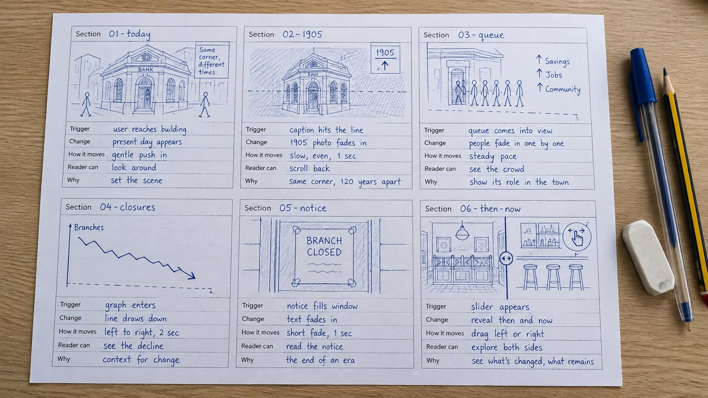
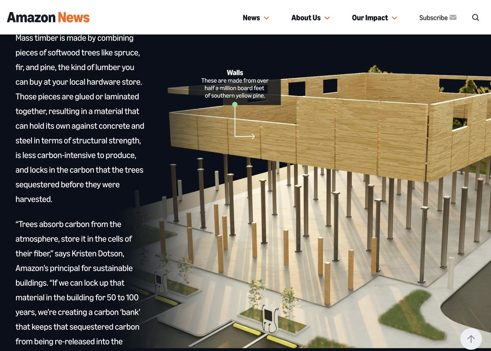

You have your idea in one sentence, a beat sheet and some of the pictures. Today the beat sheet becomes a storyboard you could hand to somebody else.
Take the storyboard seriously. It is easy to treat it as a warm-up before the real work, but it is the real work: it is a quarter of Component 1, and in Component 2 it becomes the plan your build is marked against. Every decision you make on paper now is one you will not have to make at the keyboard later, where changing your mind costs far more.
Your Component 1 PDF needs both a beat sheet and a storyboard. Your beat sheet should have been completed last week, apart from its last two columns, which you fill in today. This week you complete the storyboard.
The beat sheet says what happens in each beat, in words. The storyboard shows what each beat looks like and how it behaves: where things sit on the screen, what holds still, what sets the change off, how it moves, and how much scrolling it takes. That is what the brief means by “pacing beats, key transitions”.
| Compare | Last week: the beat sheet | This week: the storyboard |
|---|---|---|
| What it is | Words. One row per beat. | Drawings. One frame per beat, with five short notes. |
| It answers | What happens, in what order, and what the reader learns. | Where it happens on screen, what holds still, what sets it off, how it moves, and how much scrolling it takes. |
| Who it is for | You, to check the story works. | Somebody else, who could build it from the page alone. |
| In your PDF | Your concept: the experience arc. | Interaction intent: the motion storyboard. |

Last week's bank-that-is-a-bar table is drawn up as a finished storyboard in the worked example: the same eight beats, one frame each. Open it now and keep it open. It is what you are making today.
Session at a glance
- Your sources: gather them for me to look at
- Name your moves, then Activity 1: the last two columns of your beat sheet
- What a storyboard frame contains, and the notation
Break
- Activity 2: storyboard your first six beats
- Pacing: how much scroll a beat is worth
- Moodboard and concept sketches, then Activity 3: start your moodboard
- Component 1 clinic: rolling, while studio work continues
- Before the next session
Also on this page: If you get stuck · Resources
What to have with you
Your beat sheet from last week, and paper and a pen you can draw with. The storyboard kit prints onto A4 and gives you the notation key and empty frames, with a filled-in example; print a few before the session. Figma is for later in the week, once the paper version has stopped changing.
Part one
Your sources
Ten minutes. Gather the pictures, clips, charts and sources you have found so far in one place, a folder or a page of links, with a note of where each one came from. I will come round and look at them with you, mostly to check you are allowed to use them.
If you have not brought any, as last week asked, use the ten minutes to find some. Start with the places to look on last week's page.
Part two
Name your moves
Look at the “What changed” column on your beat sheet. You have already written your moves down in plain words: “the photo swapped”, “the chart drew itself”, “nothing, until the reader drags it”. Now give each one its name from the six moves you met in Week 2. The name tells you what to draw in the frame, and roughly what it will cost you to build.
| Move | What the reader sees | What it costs to build | What it is for |
|---|---|---|---|
| Hold | Something stays on screen while other things scroll past it. | Cheap. You built it in Week 2 with no script at all. | Keeping the subject in view while you talk about it. |
| Reveal | Something arrives as the reader reaches it: fades up, slides in, draws itself. | Cheap. A few lines of script. | Directing attention. Used on everything, it directs attention nowhere. |
| Swap | The held picture changes as each step of text arrives. | Moderate. A hold plus a change per step. | Before and after. Then and now. The same place across forty years. |
| Scrub | The scrollbar is wired directly to a change: a counter runs, a line draws, a map zooms. Scroll back and it runs backwards. | Moderate to build, expensive to get feeling right. Needs scroll distance to breathe. | Anything continuous. The engine of most change-over-time stories. |
| Layer | Foreground and background move at different speeds. | Cheap to add, easy to overdo, and the first thing to make people feel ill. | Depth and atmosphere. Use once. |
| Respond | The reader does something other than scroll, and the piece answers. | Varies. A button is cheap; a slider is moderate; a map you can search is a project. | The moment of genuine interaction the brief asks for. The other five are motion design. |
Here is last week's bank story with the two new columns filled in. “What changed” is copied from last week; the other two are today's.
| # | What changed | The move | What they can do |
|---|---|---|---|
| 1 | Nothing. It is there when they arrive. | None | Scroll |
| 2 | The photo swapped. | Hold, then swap | Scroll, or scroll back to swap it back |
| 3 | Photo and text arrived. | Reveal | Scroll |
| 4 | The chart drew itself. | Reveal | Scroll |
| 5 | A new photo arrived. | Reveal | Scroll |
| 6 | The video started. | None: the video plays by itself | Pause it |
| 7 | Nothing, until the reader drags it. | Respond | Drag the handle between then and now |
| 8 | The last photo arrived. | Reveal | Scroll |
Activity 1 · 10 minutes · on your own, then in pairs
The last two columns
- The move. Read across from “What changed” and write which of the six it is, or “none”. “None, it is just there” is often the right answer: stillness is what makes the moving parts count.
- What they can do. “Scroll” for most rows. Write it rather than leaving it blank, so it is clear you decided. The row you circled last week gets the real entry.
- Swap with the person next to you. For each move, they ask: “what does the reader get from this that they would not get from the still version?” The still version is not hypothetical: a reader who has asked their device for less motion sees it. If neither of you can answer, cross the move out.
Could you use 3D content?
The moves are not only for photos and text. Two more kinds of beat, seen as moves:
- An object that turns as you scroll is a scrub. The AirPods Pro page does it with a 3D model rendered as a sequence of pictures, not live 3D. You could model it in Blender.
- An object the reader can turn is a respond. Spline builds these to run live in the browser; the Spline Community has scenes to open and pull apart.
Storyboard one like any other beat if it suits your story. They look cheap and are not, and live 3D is slow on phones, so talk to me before you commit.

Part three
What a storyboard frame contains
A film storyboard shows what is on screen. A motion storyboard for scroll has to show something harder: what is on screen, and how it responds to a reader who controls the timeline. Your beat sheet already says what happens. The storyboard adds where it happens, what stays still while it does, and how it moves. One frame per beat, not one per screen, and five things in each.
-
The frame. What is on screen at this beat. Rough boxes and squiggle-text are fine; this is not an illustration exercise.
-
What is held and what moves. Mark the held elements. This is the single most useful piece of information for whoever builds it, which is you in three weeks.
-
The trigger. Where in the scroll does this happen? “When the heading is four-fifths of the way up the screen” is precise enough.
-
The change, and how it moves. What changes, and whether it is fast and settling or slow and even. Write that in words.
-
What the reader can do. Copied from the beat sheet. Nothing, in most frames.

The notation
Use this and your storyboard becomes readable by somebody else, which is the standard Component 2 is marked against: “so precisely a third party could build it”. Six marks. Draw them in the margin of your first page as a key.
| Mark | Means |
|---|---|
| Solid rectangle | The viewport at this beat |
| Hatched or shaded element | Held in place while the reader scrolls |
| Single arrow | Moves once, in this direction, when triggered |
| Double-headed arrow on a bar | Tied to the scrollbar; runs backwards when the reader scrolls back |
| Dotted line across the frame | The trigger point: where in the viewport this fires |
| Circled hand or pointer | The reader can act here |
Break
Activity 2 · 40 minutes · on your own, on paper
Storyboard your first six beats
Not the whole piece: the opening six beats, properly. Getting six right teaches you more than getting fourteen vague, and the rest is your directed task.
- One frame per beat, in reading order, the way the worked example does it. Draw the frame contents first, roughly.
- Mark what is held. Mark what moves and in which direction.
- Draw the trigger line and write what it means in words.
- Write how each change moves in three or four words.
- Find your interaction moment. Circle it. If it is not in the first six beats, note where it will be.
- Under each frame, one line: why this change, at this moment, serves the story. Annotations that say what happens are worth a pass. Annotations that say why are worth a first.
Then swap and test it
Hand your six frames to somebody who does not know your topic and ask them to describe what happens as they scroll. Where they hesitate is where your annotation is missing, not where they are being slow.
Part four
Pacing: how much scroll a beat is worth
In film, time is time. Here, the reader holds the clock, and the only thing you control is how much scrolling a beat costs. That is your pacing instrument, and it is measured in screen heights. Starting points, to be corrected in the browser later:
- About one screen per reveal. Something arrives, the reader takes it in, the next thing arrives.
- Two to three screens for a scrub. A change tied to the scrollbar needs distance to breathe; squeezed into one screen it flickers past.
- One screen per step of a held scene. Four steps is four screens of scrolling. Draw that; it is longer than it feels on paper.
- Vary it deliberately. Long, short, short, long reads like writing; all-long reads like homework.
- Slow is not the same as important. A two-second fade does not make a fact weightier; it makes the reader wait.
Write your estimate in screen heights beside each frame. Later you will scroll a page built to exactly those heights and find out how wrong you were. Paper nearly always makes a piece feel shorter than it is.
The thirty-second test
Most readers will not scroll carefully. Take your beat sheet and imagine somebody flicking to the bottom in half a minute. What do they come away with? If the answer is “nothing”, your story is hiding inside your transitions. The strongest pieces work twice: once at a flick and once properly.
Part five
Moodboard and concept sketches
The storyboard says what happens. The moodboard says what it looks and feels like: imagery, type, colour, tone. It is a Component 1 item, it is marked under concept and visual direction, and it takes longer to pull together than it looks, so start it today rather than the night before.
You do not need much. One page, or one Figma frame, with:
- Six to ten images that have the feel you are after. Your own archive material belongs here, but so do things that are nothing to do with your topic: a poster, a book cover, a piece from your key influences list. Credit each one.
- Two typefaces, one for headings and one for reading, from Google Fonts, shown at the sizes you would use them.
- Three to five colours, with the one you will use least marked as the accent.
- Visual references, if you want them: screenshots of online pieces that inspire you, such as a scrolling story, a layout or a type treatment. Put the link under each one.

Activity 3 · 25 minutes · on your own
Start your moodboard
One Figma frame or one page, named Moodboard. It does not have to be finished by the end of this, but it has to exist.
- Pull in six to ten images: some from your own sources, some from outside your topic. Put the credit under each one as you add it, not later. An AI-generated image goes in your AI-use log.
- If you like, add visual references from other online examples that inspire you: a scrolling story, a site, a layout or a type treatment. A screenshot is fine; put the link under it.
- Choose two typefaces from Google Fonts. Set a heading and a sentence of your own story in them, at the size you would use.
- Take three to five colours from your images with the eyedropper, and mark the accent.
What is a concept sketch?
A concept sketch is a storyboard frame drawn again with the moodboard applied: your type, colours and images roughed into place. The storyboard frame says what happens; the concept sketch says what it looks like when it does. Do two or three, including the cover and one scene. Paper or Figma. They are sketches, not finished designs; the finished design is Component 2's job, and you will change your mind about most of it.
Figma, and where the storyboard ends up
Paper is faster for the first pass and I will not mark you down for it: photograph it and it counts for Component 1. But Component 2 asks for the storyboard in Figma, one frame per beat with notes on what changes and how, so the work has to end up there. Once your paper version has stopped changing, rebuild it: one Figma frame per beat, stacked in reading order, the notes as text beside each frame (trigger, change, how it moves, reader action), the frames named the way you will name your sections. Not Figma's prototype mode: it cannot do scroll triggers, and it is not what the brief asks for. Sharing your file and its history with me is taught later; you do not need to do it this week.
Rolling · about 20 minutes · the last part of the session
Component 1 clinic
I will come round and give advice on your Component 1 documentation as it stands. It helps me to see your beat sheet and any source material. If you think anything is too ambitious, we can talk it through.
Next week is the hand-in week
Component 1 goes to MyBeckett by Friday 30 October, 12 noon. The next session opens with a peer show of concepts and then gives you studio time on the document itself, so bring something you are prepared to talk about, not something you are still hiding.
Before the next session
Finish the storyboard, start the document
Bring with you
- A complete beat sheet, every column filled in, for the whole piece.
- A storyboard frame for every beat, annotated with the notation above and a line under each on why. Rough is fine; complete is not optional.
- Your designed interaction moment, drawn and annotated properly. Interaction intent is a quarter of the marks, so draw it; a sentence describing it is not enough.
- A moodboard and two or three concept sketches.
- A draft of your Component 1 PDF with all six headings in it, however thin some of them are. Draft, not final. There is studio time for fixing it.
- Your laptop, with your project synced and ready to open.
If you get stuck
I cannot draw
I am not marking your draughtsmanship. Boxes, arrows and squiggles for text are the professional standard for this kind of storyboard, because the point is the decisions, not the picture. If it blocks you, build the frames in Figma from rectangles.
Every beat wants to be a held scene
That is an easy trap to fall into. Pick the two moments in your story that most deserve to stop the reader, and make those scenes. Everything else is a plain section. Contrast is what makes a scene feel like an event.
I cannot find a real interaction moment
Look for a place where the reader would naturally want to compare, choose, or check themselves. Before and after. Guess before you are told. Pick which of three you want to follow. Find your own town on the map. The test is that their action changes what they see, and that a different reader could do it differently.
My storyboard has twenty-five beats
Half of them are the same beat. Ask of each one what the reader now knows that they did not know before it; if the answer repeats, merge them. If they all survive, your topic is too broad and it is not too late to narrow it, but talk to me this week rather than after the hand-in.
Should I storyboard for phone or desktop?
Desktop. The frames are landscape so there is room to draw where things sit and what moves. Keep the phone in mind as you draw: anything placed side by side on a wide screen will stack on a phone, so note in the frame what goes first when it does.
Something else
Ask in the studio, or email a.m.pearson@leedsbeckett.ac.uk. I normally reply within two working days.
Resources
-
The storyboard kit
Empty storyboard frames with the annotation rows already ruled, the notation key, and a filled-in example.
-
The beat sheet
One row per beat, six columns. A spare if yours is full.
-
Making Internet Things: Design
How the design stage works when the output is an interactive essay rather than a page.
-
Scrollytelling examples
A dozen pieces with the techniques named. Useful for stealing structures rather than looks.
-
Adventures in Accessible Scrollytelling
A team who build this professionally, on what breaks for real readers and what they do instead. Own-time watching; it will make sense of several things we do later in the module.
-
Google Fonts
Pair a heading face with a reading face. The “Pairings” tab on any font page is a good start.
-
Figma for Education
Free professional plan for students. Renew here if yours has expired.